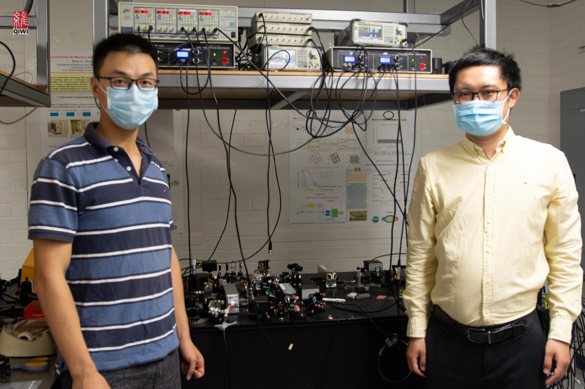

Quantum Computing and Sensing: Engineers Demonstrate a Quantum Advantage
--------------------------------------------------------------------
By UNIVERSITY OF ARIZONA JUNE 5, 2021
Researchers in the University of Arizona College of Engineering and James C. Wyant College of Optical Sciences experimentally demonstrate
how quantum resources aren’t just dreams for the distant future — they can improve the technology of today.
Quantum computing and quantum sensing have the potential to be vastly more powerful than their classical counterparts.
Not only could a fully realized quantum computer take
just seconds to solve equations that would take a classical computer thousands of years, but it could have incalculable impacts on areas ranging from biomedical imaging to autonomous driving.
However, the technology isn’t quite there yet.
In fact, despite widespread theories about the far-reaching impact of quantum technologies, very few researchers have been able to demonstrate, using the technology available now, that quantum methods have an advantage over their classical counterparts.
In a paper published on June 1, 2021, in the journal Physical Review X, University of Arizona researchers experimentally show that quantum has an advantage over classical computing systems.
“Demonstrating a quantum advantage is a long-sought-after goal in the community, and very few experiments have been able to show it,” said paper co-author Zheshen Zhang, assistant professor of materials science and engineering, principal investigator of the UArizona Quantum Information and Materials Group and one of the paper’s authors. “We are seeking to demonstrate how we can leverage the quantum technology that already exists to benefit real-world applications.”
How (and When) Quantum Works
Quantum computing and other quantum processes rely on tiny, powerful units of information called qubits. The classical computers we use today work with units of information called bits, which exist as either 0s or 1s, but qubits are capable of existing in both states at the same time. This duality makes them both powerful and fragile. The delicate qubits are prone to collapse without warning, making a process called error correction — which addresses such problems as they happen — very important.

Quntao Zhuang (left), PI of the Quantum Information Theory Group, and Zheshen Zhang, PI of the Quantum Information and Materials Group, are both assistant professors in the College of Engineering. Credit: University of Arizona
The quantum field is now in an era that John Preskill, a renowned physicist from the California Institute of Technology, termed “noisy intermediate scale quantum,” or NISQ. In the NISQ era, quantum computers can perform tasks that only require about 50 to a few hundred qubits, though with a significant amount of noise, or interference. Any more than that and the noisiness overpowers the usefulness, causing everything to collapse. It is widely believed that 10,000 to several million qubits would be needed to carry out practically useful quantum applications.
Imagine inventing a system that guarantees every meal you cook will turn out perfectly, and then giving that system to a group of children who don’t have the right ingredients. It will be great in a few years, once the kids become adults and can buy what they need. But until then, the usefulness of the system is limited. Similarly, until researchers advance the field of error correction, which can reduce noise levels, quantum computations are limited to a small scale.
Entanglement Advantages
The experiment described in the paper used a mix of both classical and quantum techniques. Specifically, it used three sensors to classify the average amplitude and angle of radio frequency signals.
The sensors were equipped with another quantum resource called entanglement, which allows them to share information with one another and provides two major benefits: First, it improves the sensitivity of the sensors and reduces errors. Second, because they are entangled, the sensors evaluate global properties rather than gathering data about specific parts of a system. This is useful for applications that only need a binary answer; for example, in medical imaging, researchers don’t need to know about every single cell in a tissue sample that isn’t cancerous — just whether there’s one cell that is cancerous. The same concept applies to detecting hazardous chemicals in drinking water.
The experiment demonstrated that equipping the sensors with quantum entanglement gave them an advantage over classical sensors, reducing the likelihood of errors by a small but critical margin.
“This idea of using entanglement to improve sensors is not limited to a specific type of sensor, so it could be used for a range of different applications, as long as you have the equipment to entangle the sensors,” said study co-author Quntao Zhuang, assistant professor of electrical and computer engineering and principal investigator of the Quantum Information Theory Group. “In theory, you could consider applications like lidar (Light Detection and Ranging) for self-driving cars, for example.”
Zhuang and Zhang developed the theory behind the experiment and described it in a 2019 Physical Review X paper. They co-authored the new paper with lead author Yi Xia, a doctoral student in the James C. Wyant College of Optical Sciences, and Wei Li, a postdoctoral researcher in materials science and engineering.
Qubit Classifiers
There are existing applications that use a mix of quantum and classical processing in the NISQ era, but they rely on preexisting classical datasets that must be converted and classified in the quantum realm. Imagine taking a series of photos of cats and dogs, then uploading the photos into a system that uses quantum methods to label the photos as either “cat” or “dog.”
The team is tackling the labeling process from a different angle, by using quantum sensors to gather their own data in the first place. It’s more like using a specialized quantum camera that labels the photos as either “dog” or “cat” as the photos are taken.
“A lot of algorithms consider data stored on a computer disk, and then convert that into a quantum system, which takes time and effort,” Zhuang said. “Our system works on a different problem by evaluating physical processes that are happening in real time.”
The team is excited for future applications of their work at the intersection of quantum sensing and quantum computing. They even envision one day integrating their entire experimental setup onto a chip that could be dipped into a biomaterial or water sample to identify disease or harmful chemicals.
“We think it’s a new paradigm for both quantum computing, quantum machine learning, and quantum sensors, because it really creates a bridge to interconnect all these different domains,” Zhang said.
Reference: “Quantum-Enhanced Data Classification with a Variational Entangled Sensor Network” by Yi Xia, Wei Li, Quntao Zhuang and Zheshen Zhang, 1 June 2021, Physical Review X.
DOI: 10.1103/PhysRevX.11.021047